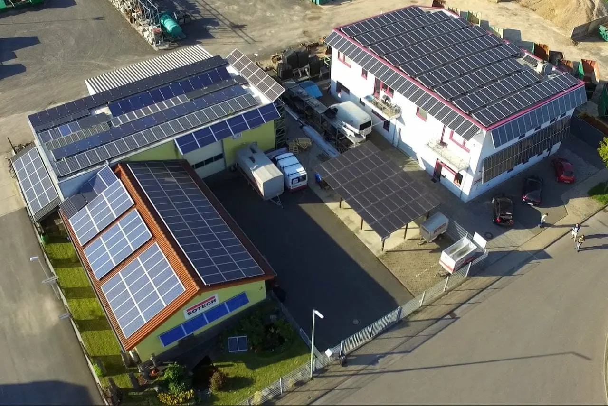
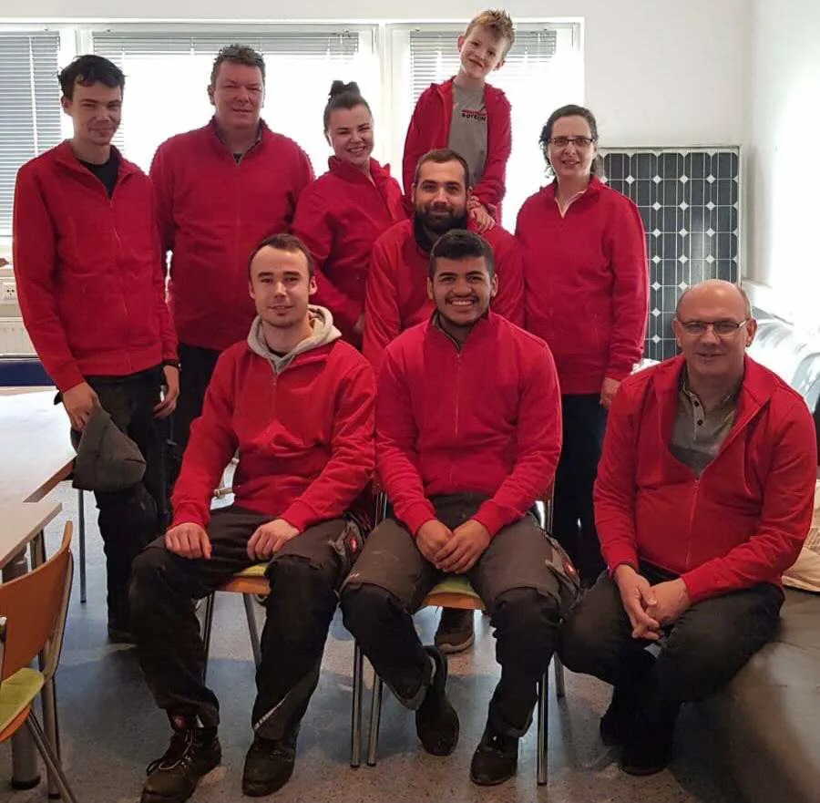
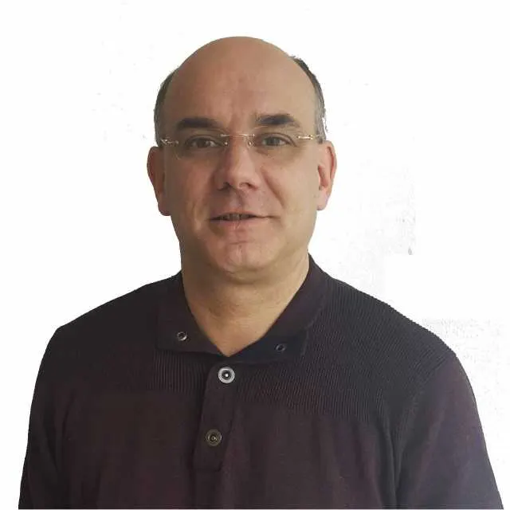
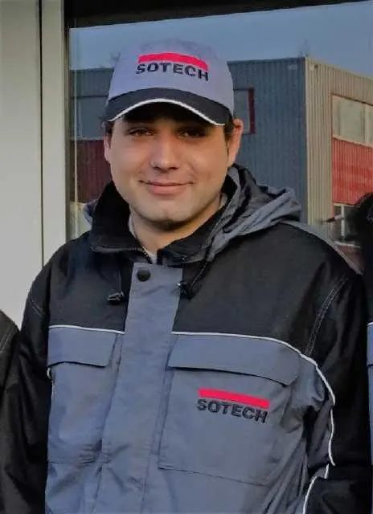
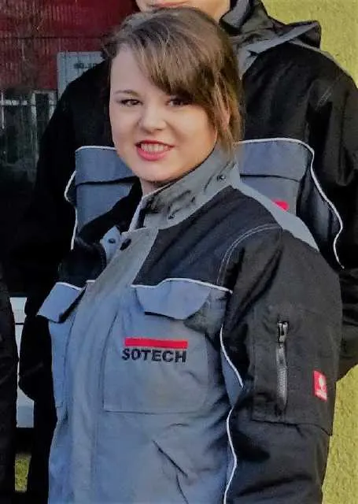
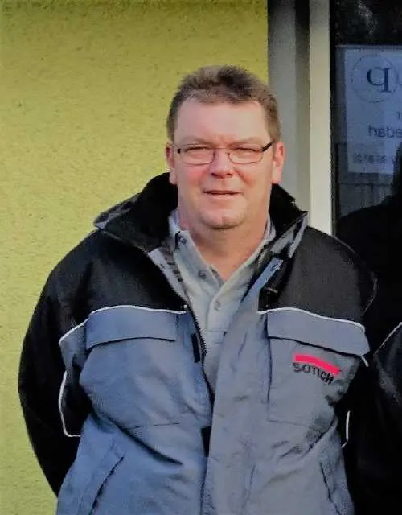
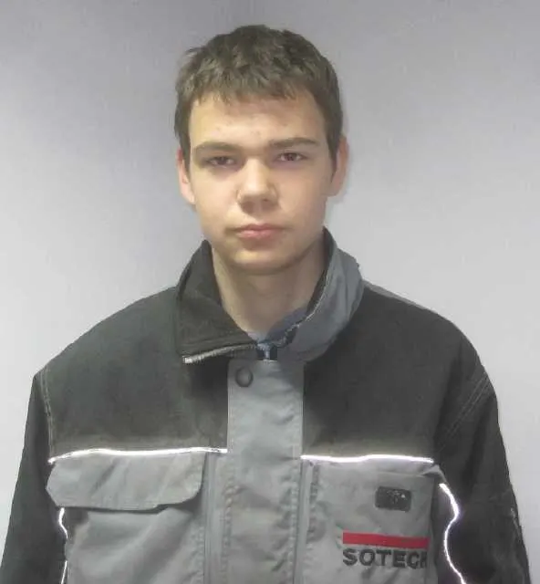
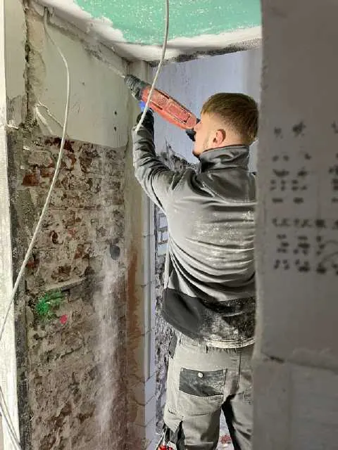
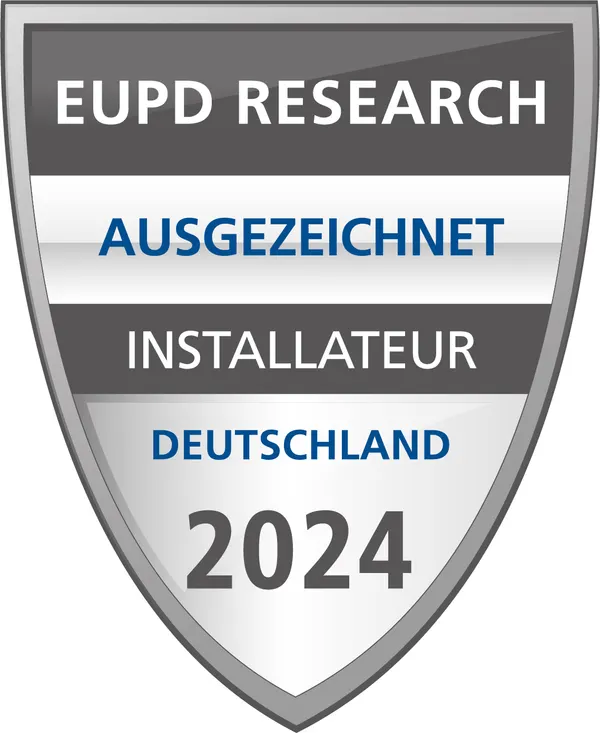

Unternehmen
Ein Familienbetrieb in Sachen Energiewende.
Während große Konzerne auf Masse und Standardisierung setzen, punkten wir mit Vertrauen, Menschlichkeit und einer langfristigen Perspektive. Bei SOTECH arbeitet die Sonne – seit 1988.
Unser Fundament
Vertrauen, Nähe und Zuverlässigkeit.
Persönliche Verantwortung
Der Chef steht oft noch selbst auf dem Dach oder berät am Küchentisch. Wir verkaufen kein anonymes Produkt, sondern eine Lösung, für die wir mit unserem Namen bürgen.
Regionale Verwurzelung
Wir kennen die lokalen Gegebenheiten, das Wetter und die Netzbetreiber. Ein Familienbetrieb ist kein „Ghost“ nach der Installation – man findet uns auch nach 37 Jahren noch am selben Standort.
Generationendenken
Wir denken nicht in Quartalszahlen, sondern an die nächsten Generationen. Viele Monteure und Elektriker sind seit ihrer Ausbildung im Betrieb – das sorgt für eingespielte Teams und Expertise über die reine Montage hinaus. Wir gehören zu den wenigen Betrieben, die heute noch ausbilden.

„Ein Familienbetrieb für Solartechnik ist der Partner, der die Energiewende nahbar macht – durch handwerkliche Präzision, persönliche Beratung und das Versprechen, auch dann noch da zu sein, wenn die Sonne mal Pause macht.“
Team
Die Menschen hinter SOTECH.

Dirk Gier
Kommt zu Ihnen und berät kostenlos über umweltfreundlichen Solarstrom. Ein Mann vom Fach.
Gabi Gier
Die rechte Hand des Chefs, seit Jahren im Betrieb. Berät umfassend zu Fördermöglichkeiten und Photovoltaik – und vergibt Termine für die Besichtigungsanlage.

Christian Gier
Geselle, steckt in der Meisterausbildung im Elektrohandwerk – die Grundlage, um den Betrieb einmal zu übernehmen.

Stephanie Hackner, geb. Gier
Bestandene Meisterprüfung im Elektrotechniker-Handwerk – Fleiß und fachliches Können in der nächsten Generation.

Michael Eschweiler
Kümmert sich um Hausinstallationen in Alt- und Neubauten; Sat-Antennen und Türsprechanlagen gehören ebenso zu seinem Tag.

René Brieger
Begann 2014 seine Ausbildung bei SOTECH – plant und installiert elektrotechnische Anlagen von Gebäuden.

Florian Ervens
Unterstützt bei den Dachmontagen und der Elektrik nach Anweisung.
Abdull Haj Bakri
Beginnt am 1.8.2026 seine Ausbildung. Wir wünschen viel Spaß und Erfolg.
Schülerpraktikum & Ausbildung
Ein Schülerpraktikum ist eine hervorragende Möglichkeit, den Berufswunsch auszutesten. Wir bilden aus: Elektroniker/in für Energie- und Gebäudetechnik.
Geschichte
Solarpionier seit 1988.
- 1988Gründung der SOTECH in Düsseldorf als Ingenieurbüro.
- 1994Solarkraftwerk an der Erich-Fried-Gesamtschule Wuppertal – Lieferung und Bauleitung.
- 1995Umwandlung in eine GmbH, Niederlassung in Aachen.
- 2000Zwei Jahre Tochtergesellschaft der Shell Solar GmbH, Sitz Aachen.
- 2008Gründung der SOTECH Vertrieb GmbH (Großhandel und Versand).
- 2011Neues Firmengebäude mit Schulungsraum und Lager in Stolberg, Am Birkenfeld.
- 2012Das erste Elektroauto (Opel Ampera) lädt täglich unter dem Solarcarport.
- 201325-jähriges Bestehen – gefeiert mit 120 Personen, darunter viele Altkunden.
- 2016SOTECH montiert den ersten Tesla-Speicher in Aachen.
- 2018Montage diverser Ladesäulen; der Betrieb fährt inzwischen drei E-Fahrzeuge.
- 2023/24EUPD Research: SOTECH GmbH ist „Ausgezeichneter Installateur Deutschland“.
- 202638 Jahre, rund 1.500 Anlagen, 7.800 kWp – und die nächste Generation in der Meisterausbildung.

Auszeichnung
Ausgezeichneter Installateur Deutschland 2023 und 2024.
Das Marktforschungsunternehmen EUPD Research zeichnet Installateure aus, die von Kunden und Herstellern besonders gut bewertet werden. Dazu 5/5 Sterne bei Google – wir geben unser Bestes.
Termin wählen
Lernen Sie uns kennen.
Am besten bei Ihnen zu Hause – oder an unserer Besichtigungsanlage in Aachen.
Vor-Ort-Beratung
Herr Gier kommt zu Ihnen, schaut sich Dach und Zählerschrank an und berät kostenlos.
Termin anfragenBesichtigungsanlage
Speicher, Wallboxen und Wärmepumpe im Betrieb sehen – Mehrfamilienhaus in Aachen, nach Absprache.
Besichtigung vereinbarenRückruf
Sie nennen uns Zeit und Nummer – wir rufen zurück. Auch außerhalb der Bürozeiten erreichbar.
Rückruf wünschenAngebot anfordern
Eckdaten zu Dach und Verbrauch senden – Sie bekommen ein unverbindliches, kostenloses Angebot.
Angebot anfragenOder direkt anrufen
02402 7097620Mo–Do 8–15 Uhr · Fr 8–14 Uhr
Außerhalb der Geschäftszeiten: 0241 562489 oder 0171 5296741